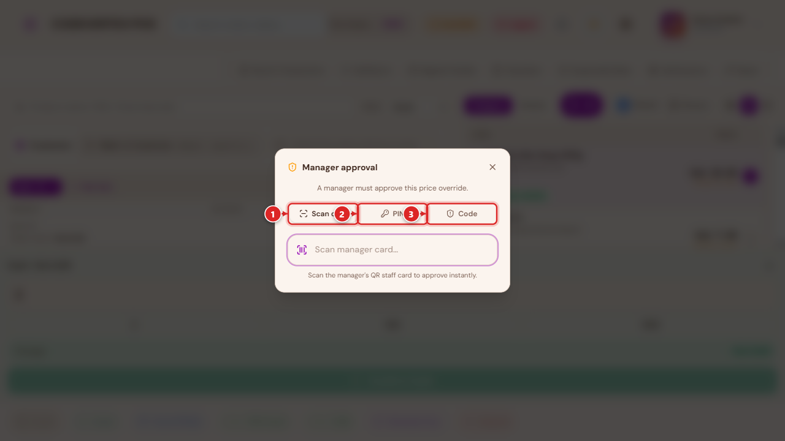
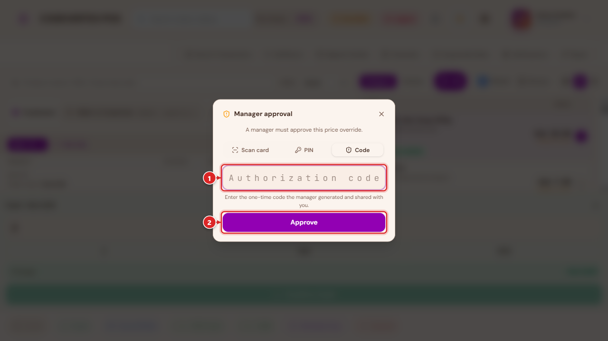
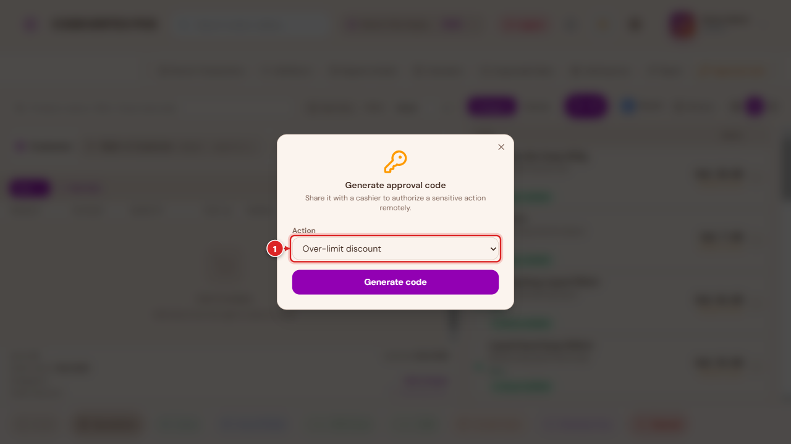
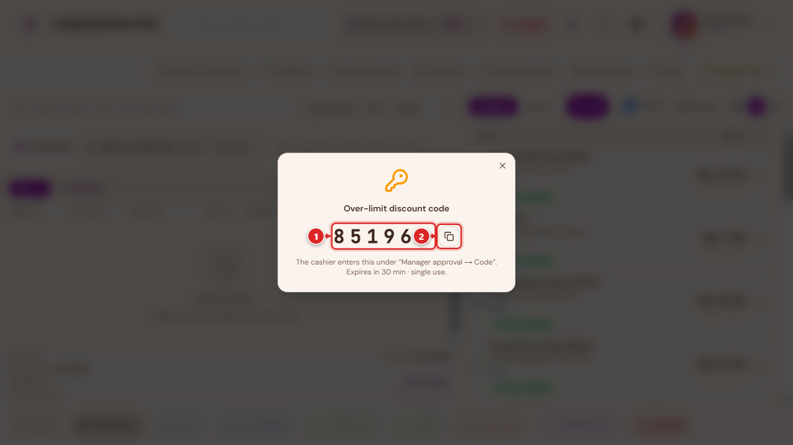

Approvals & Manager Overrides¶
Some actions at the till are deliberately not left to a cashier's own judgement — selling below cost, discounting past a limit, giving something away for free, or voiding a bill. This page covers the three mechanisms the POS uses to require a second person's sign-off, and the Complimentary (no-charge) payment workflow, which is the most common reason a manager gets pulled in.
The three ways to approve¶
Whenever an action needs manager sign-off, the same dialog offers three ways to provide it:

- Scan card — the manager scans their own QR staff card at the terminal.
- PIN — the manager types their PIN directly at the terminal.
- Code — a one-time code the manager generated remotely and shared (by phone, radio, or in person) with the cashier, for when they can't get to the terminal themselves.

A manager (or a role your organisation has explicitly granted a matching self-approve permission to) skips this dialog entirely for actions they're already allowed to authorize themselves — Void and most overrides work this way by default. Complimentary is a deliberate exception: even a manager acting as their own cashier must authorize it, since it's real, unrecovered inventory cost with higher potential for abuse than a simple discount.
When approval is asked for¶
- A discount or price change beyond your role's limit. Selling below the catalog price, or applying a discount larger than your organisation allows a cashier to give on their own, prompts this dialog automatically when you try to complete the sale.
- Out-of-stock overrides — adding more of an item than the outlet actually has on hand (see below).
- Order adjustments — additional charges, or other order-level edits past a normal amount.
- Void — cancelling a bill.
- Complimentary — giving a whole bill (or part of a split bill) away at no charge (see below).
Out-of-stock overrides¶
Adding more of an item to a sale than the outlet actually has on hand triggers the same manager-approval dialog rather than silently overselling. A manager (or a role explicitly granted the matching self-approve permission) confirms it with a plain Yes/No instead of the full dialog; everyone else goes through Scan card / PIN / Code like any other approval.
Generating a one-time approval code¶
A manager who isn't physically at the terminal can still authorize an action remotely. The amber Approval code button, on the POS Terminal's toolbar, mints a one-time code for a not-yet-placed sale's discount, price override, order adjustment, or out-of-stock override:

Pick the action, then Generate code:

Read the code out (by phone, radio, or in person) to the cashier, who enters it under the approval dialog's Code tab. It's single-use and expires a short time after it's generated — if it isn't used in time, generate a fresh one.
Once a bill has already been placed, the same idea applies per-bill: its detail page shows Void code and Complimentary code buttons for a manager to generate a one-time code specifically for voiding, or comping, that one bill — see Void and Complimentary payments below.
Void¶
Voiding cancels a bill entirely — reversing anything already booked against it. It's available from the terminal while a sale is still open, and from an already-placed bill's own page (Void Bill) for open, pending, draft, sent, in-progress, parked, unpaid, or partially-paid bills; a bill that's already been paid, cancelled, or voided can't be voided again (a paid sale is handled through Returns instead).
Voiding always asks for a reason first — Customer complaint, Duplicate order, System error, Manager override, or Other — before the manager-approval step (unless you're the one authorizing it yourself).
Void is for a bill that's still in progress or unpaid. A sale that's already completed is corrected with Edit Sale or Delete Sale instead — both admin-level tools, opened from a completed sale's own actions menu.
Editing a completed sale¶
Edit Sale corrects a completed sale in place — the sale keeps its original order number and status throughout, rather than being cancelled and replaced:
- Removing a line, or reducing its quantity reverses just that portion: stock is added back, the amount owed/refundable adjusts down, and any loyalty points or staff commission earned on it are clawed back proportionally.
- Adding a new item, or increasing an existing line's quantity bills the difference as a small linked follow-on sale, referencing the original — stock, tax, and loyalty all apply to the top-up exactly like a normal sale.
- A line can only be reduced once. To correct the same line a second time, remove it entirely and add it back at the corrected quantity as a fresh line.
- Changing only the price of a line without changing its quantity isn't something this tool captures — remove the line and re-add it at the corrected price instead.
- Edit Sale is only available while the sale hasn't already been fully reversed or refunded — once it has, use Returns for anything further.
Billing an increase to a customer's account. If the original sale was a walk-in (no customer attached) and the increase should go on someone's account, attach the customer while editing — the top-up bills to their account correctly, and that customer stays on record for the sale so any later payment against it finds the right account. A small walk-in hint on the Edit Sale button is a reminder to do this when it looks like the sale might need it, not a requirement to act on it.
Deleting a sale¶
Delete Sale (admin only) is for a sale that should never have been recorded at all — entered against the wrong till, a training mistake, a genuine duplicate. What happens next depends on whether the sale was already reported to KRA eTIMS:
- Already reported — the sale can't be erased (a transmitted tax record has to stay on file), so Delete reverses everything it caused (stock restored, the ledger entry undone) and marks the sale deleted. It still shows up in a fiscal audit trail, just flagged as removed. Delete Sale can't be used on a sale that already has a return, refund, or other correction against it — void or edit it instead.
- Never reported — the sale is removed entirely, after the same stock and ledger reversal.
Complimentary (no-charge) payments¶
Complimentary closes a bill with no cash collected — for staff meals, a director's order, goodwill toward a customer, or a vendor/technical visit. It's a genuine tender, not a discount: the items are still deducted from stock and the sale is still recorded, just with nothing paid.
Reached from Settle Bill (Tables) or Collect Payment (an open bill's own detail page) — a plain retail/quick-service checkout doesn't offer it directly, since it's a bill-level, always manager-approved action rather than an everyday till tender. Picking it opens a short reason capture first:
- Staff meal
- Director's order
- Goodwill / comp
- Vendor / technical visit
- Other (free text)
The app explains plainly what happens next: "No cash will be collected — this closes as a complimentary expense in your books (revenue is still recorded, offset by a Complimentary & Goodwill Expense line, so management can see what was given away)." See Payments & Treasury for how this shows up in your financial reports.
A reason and manager approval are always required — the same three-way dialog described above, with no self-approve shortcut for anyone, manager included.
Complimentary code¶
Exactly like Void, a manager who isn't at the terminal can pre-authorize a specific bill's complimentary close remotely — its detail page's Complimentary code button mints a one-time code:
Share this code with the waiter/cashier. They enter it under "Manager approval → Code" to close the bill as complimentary. Single use, expires a short time after it's generated.
Split bills¶
Comping only part of a bill (pay for some guests, comp the rest) works through the same Multiple Pay / split-by-item flow described in Selling & Checkout — assign the items you're comping to their own guest, then choose Complimentary for that guest's portion. The receipt and reports both reflect a mixed sale correctly: part collected, part complimentary.
Common Issues¶
A manager's PIN works to log in everywhere, but is rejected when stepping up to approve something at a different outlet. Approval PINs and cards are checked the same way login is — if this happens, the PIN itself is fine; check with your account contact, since this points at an outlet-assignment gap on that manager's account rather than a wrong PIN.
An approval code says it's invalid, even though it was just generated. Codes are tied to the specific outlet they were generated for and expire quickly by design — confirm the cashier is at the same outlet, and that the code hasn't already timed out (generate a fresh one if it has).
Complimentary doesn't appear as a payment option. It's an opt-in feature your organisation enables — if your business genuinely needs it (staff meals, comps) and doesn't see it, ask your account contact to switch it on.
Editing a sale to add value says something like "requires a customer with a phone number selected." Billing the extra amount needs one of two things: an active Cash payment method configured for your outlet (see Settings & Configuration → Payment Display), or a customer attached to the sale so the top-up can go on their account instead. If neither is set up, attach a customer while editing, or ask your admin to check that an active Cash tender exists.
Edit Sale is greyed out on a completed sale. The sale has already been fully reversed or refunded — Edit Sale only works on a sale that hasn't gone through that yet. Use Returns for anything further on an already-refunded sale.
Delete Sale refuses with "this sale already has a return, refund, or reversal on record." Delete is only for a plain, untouched sale entered by mistake. A sale that's already been corrected in any way needs that correction's own tool (Edit Sale, or Returns) instead — Delete won't layer on top of existing history.
Resuming a draft and changing it — will that create a second sale? No. Adding, removing, or adjusting items on a resumed draft always saves onto that same draft — it never creates a replacement order or leaves a stray voided one behind, however many changes you make before it's finally completed.
An admin or manager still sees the full approval dialog for an action they should be able to self-approve. Self-approval is a specific, named permission separate from the general admin/manager role — check Team, Shifts & Cash Management → Roles & permissions for the exact self-approve permission that action needs.